Generic JDBC Interpreter for Apache Zeppelin
Overview
JDBC interpreter lets you create a JDBC connection to any data sources seamlessly.
Inserts, Updates, and Upserts are applied immediately after running each statement.
By now, it has been tested with:
If you are using other databases not in the above list, please feel free to share your use case. It would be helpful to improve the functionality of JDBC interpreter.
Create a new JDBC Interpreter
First, click + Create button at the top-right corner in the interpreter setting page.
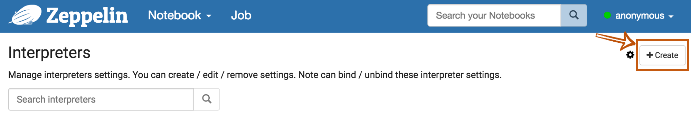
Fill Interpreter name field with whatever you want to use as the alias(e.g. mysql, mysql2, hive, redshift, and etc..). Please note that this alias will be used as %interpreter_name to call the interpreter in the paragraph.
Then select jdbc as an Interpreter group.
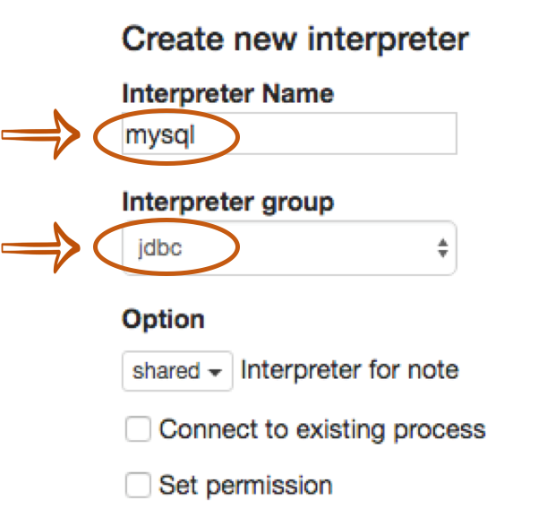
The default driver of JDBC interpreter is set as PostgreSQL. It means Zeppelin includes PostgreSQL driver jar in itself.
So you don't need to add any dependencies(e.g. the artifact name or path for PostgreSQL driver jar) for PostgreSQL connection.
The JDBC interpreter properties are defined by default like below.
| Name | Default Value | Description |
|---|---|---|
| common.max_count | 1000 | The maximun number of SQL result to display |
| default.driver | org.postgresql.Driver | JDBC Driver Name |
| default.password | The JDBC user password | |
| default.url | jdbc:postgresql://localhost:5432/ | The URL for JDBC |
| default.user | gpadmin | The JDBC user name |
If you want to connect other databases such as Mysql, Redshift and Hive, you need to edit the property values.
You can also use Credential for JDBC authentication.
If default.user and default.password properties are deleted(using X button) for database connection in the interpreter setting page,
the JDBC interpreter will get the account information from Credential.
The below example is for Mysql connection.
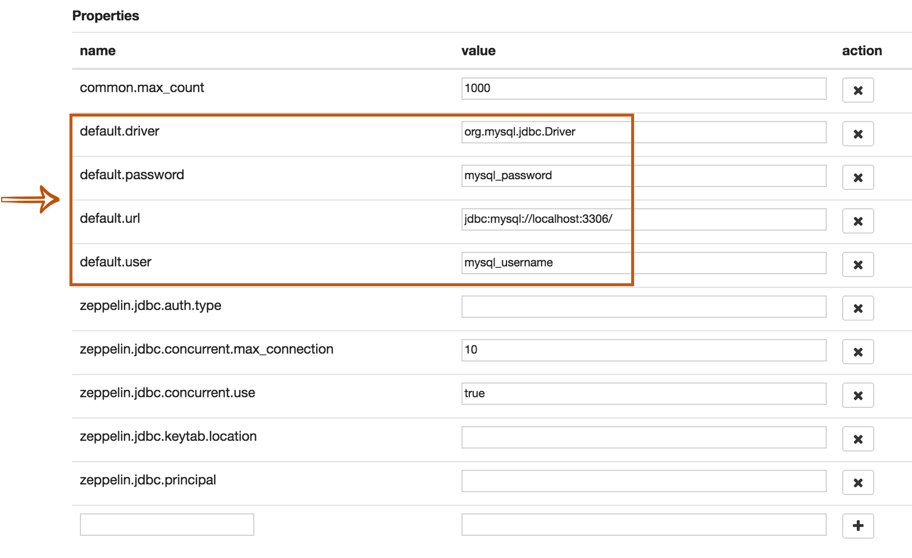
The last step is Dependency Setting. Since Zeppelin only includes PostgreSQL driver jar by default, you need to add each driver's maven coordinates or JDBC driver's jar file path for the other databases.
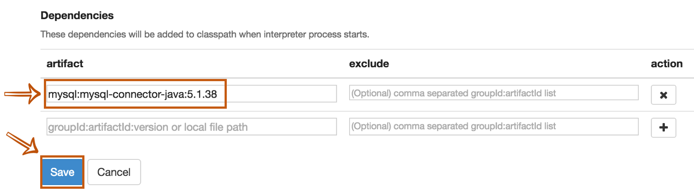
That's it. You can find more JDBC connection setting examples(Mysql, MariaDB, Redshift, Apache Hive, Apache Phoenix, and Apache Tajo) in this section.
More properties
There are more JDBC interpreter properties you can specify like below.
| Property Name | Description |
|---|---|
| common.max_result | Max number of SQL result to display to prevent the browser overload. This is common properties for all connections |
| zeppelin.jdbc.auth.type | Types of authentications' methods supported are SIMPLE, and KERBEROS |
| zeppelin.jdbc.principal | The principal name to load from the keytab |
| zeppelin.jdbc.keytab.location | The path to the keytab file |
| default.jceks.file | jceks store path (e.g: jceks://file/tmp/zeppelin.jceks) |
| default.jceks.credentialKey | jceks credential key |
You can also add more properties by using this method. For example, if a connection needs a schema parameter, it would have to add the property as follows:
| name | value |
|---|---|
| default.schema | schema_name |
Binding JDBC interpter to notebook
To bind the interpreters created in the interpreter setting page, click the gear icon at the top-right corner.
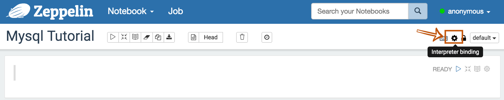
Select(blue) or deselect(white) the interpreter buttons depending on your use cases.
If you need to use more than one interpreter in the notebook, activate several buttons.
Don't forget to click Save button, or you will face Interpreter *** is not found error.
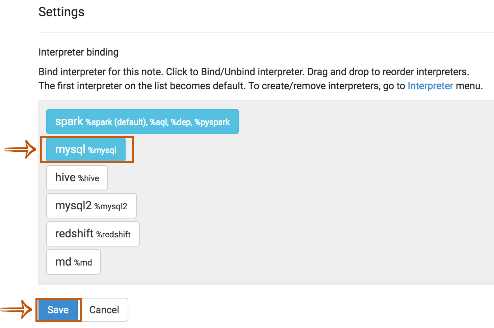
How to use
Run the paragraph with JDBC interpreter
To test whether your databases and Zeppelin are successfully connected or not, type %jdbc_interpreter_name(e.g. %mysql) at the top of the paragraph and run show databases.
%jdbc_interpreter_name
show databases
If the paragraph is FINISHED without any errors, a new paragraph will be automatically added after the previous one with %jdbc_interpreter_name.
So you don't need to type this prefix in every paragraphs' header.
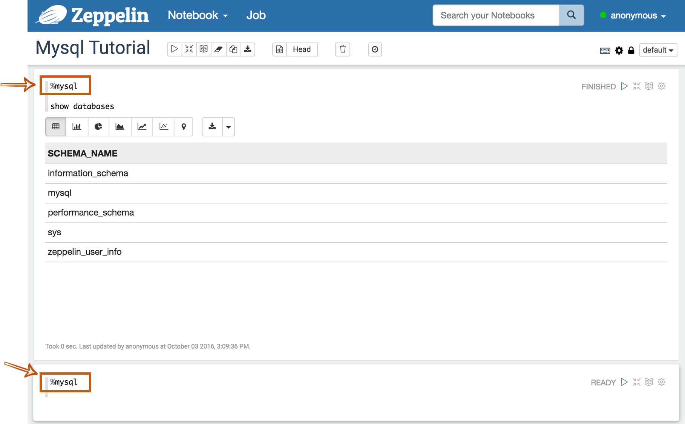
Apply Zeppelin Dynamic Forms
You can leverage Zeppelin Dynamic Form inside your queries. You can use both the text input and select form parametrization features.
%jdbc_interpreter_name
SELECT name, country, performer
FROM demo.performers
WHERE name='{{performer=Sheryl Crow|Doof|Fanfarlo|Los Paranoia}}'
Examples
Here are some examples you can refer to. Including the below connectors, you can connect every databases as long as it can be configured with it's JDBC driver.
Postgres
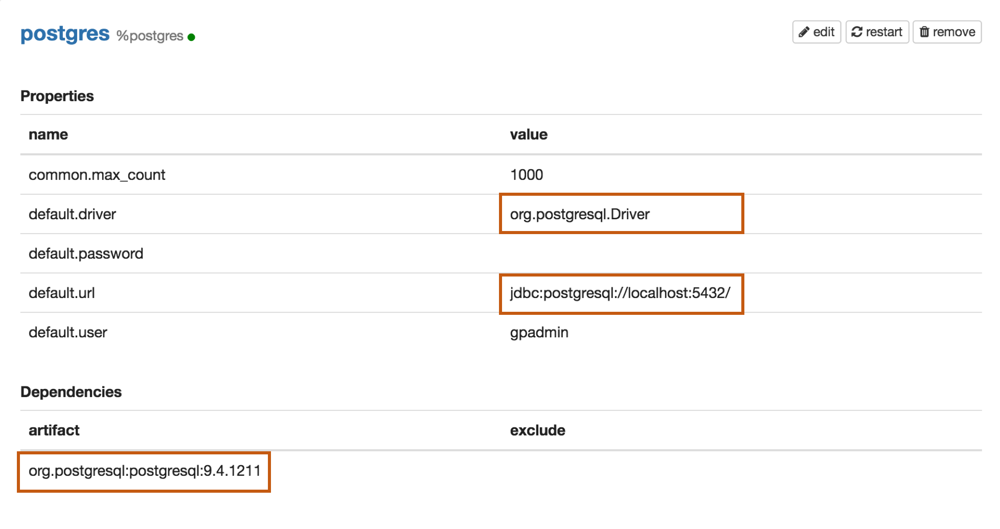
Properties
| Name | Value |
|---|---|
| default.driver | org.postgresql.Driver |
| default.url | jdbc:postgresql://localhost:5432/ |
| default.user | mysql_user |
| default.password | mysql_password |
Dependencies
| Artifact | Excludes |
|---|---|
| org.postgresql:postgresql:9.4.1211 |
Maven Repository: org.postgresql:postgresql
Mysql
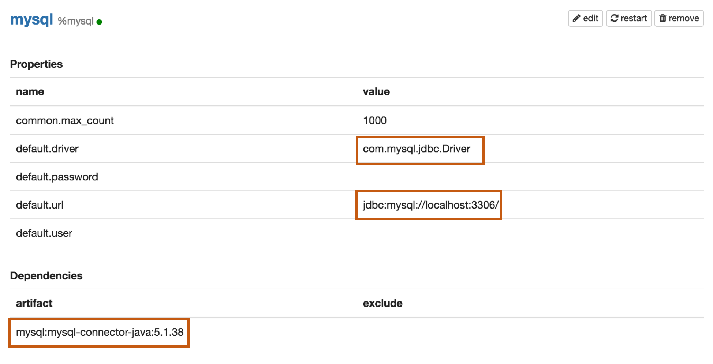
Properties
| Name | Value |
|---|---|
| default.driver | com.mysql.jdbc.Driver |
| default.url | jdbc:mysql://localhost:3306/ |
| default.user | mysql_user |
| default.password | mysql_password |
Dependencies
| Artifact | Excludes |
|---|---|
| mysql:mysql-connector-java:5.1.38 |
Maven Repository: mysql:mysql-connector-java
MariaDB
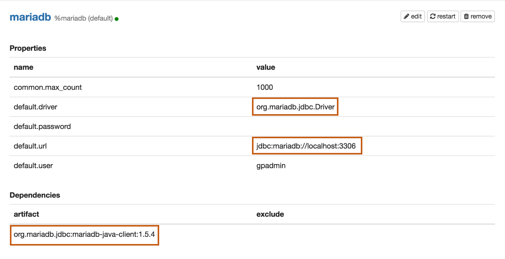
Properties
| Name | Value |
|---|---|
| default.driver | org.mariadb.jdbc.Driver |
| default.url | jdbc:mariadb://localhost:3306 |
| default.user | mariadb_user |
| default.password | mariadb_password |
Dependencies
| Artifact | Excludes |
|---|---|
| org.mariadb.jdbc:mariadb-java-client:1.5.4 |
Maven Repository: org.mariadb.jdbc:mariadb-java-client
Redshift
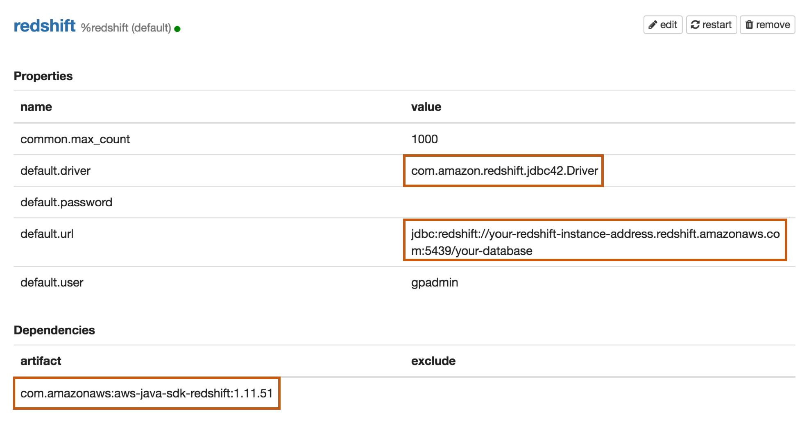
Properties
| Name | Value |
|---|---|
| default.driver | com.amazon.redshift.jdbc42.Driver |
| default.url | jdbc:redshift://your-redshift-instance-address.redshift.amazonaws.com:5439/your-database |
| default.user | redshift_user |
| default.password | redshift_password |
Dependencies
| Artifact | Excludes |
|---|---|
| com.amazonaws:aws-java-sdk-redshift:1.11.51 |
Maven Repository: com.amazonaws:aws-java-sdk-redshift
Apache Hive
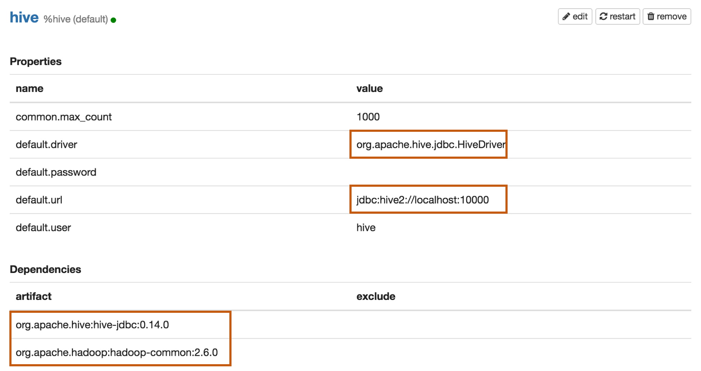
Properties
| Name | Value |
|---|---|
| default.driver | org.apache.hive.jdbc.HiveDriver |
| default.url | jdbc:hive2://localhost:10000 |
| default.user | hive_user |
| default.password | hive_password |
Apache Hive 1 JDBC Driver Docs Apache Hive 2 JDBC Driver Docs
Dependencies
| Artifact | Excludes |
|---|---|
| org.apache.hive:hive-jdbc:0.14.0 | |
| org.apache.hadoop:hadoop-common:2.6.0 |
Maven Repository : org.apache.hive:hive-jdbc
Apache Phoenix
Phoenix supports thick and thin connection types:
- Thick client is faster, but must connect directly to ZooKeeper and HBase RegionServers.
- Thin client has fewer dependencies and connects through a Phoenix Query Server instance.
Use the appropriate default.driver, default.url, and the dependency artifact for your connection type.
Thick client connection
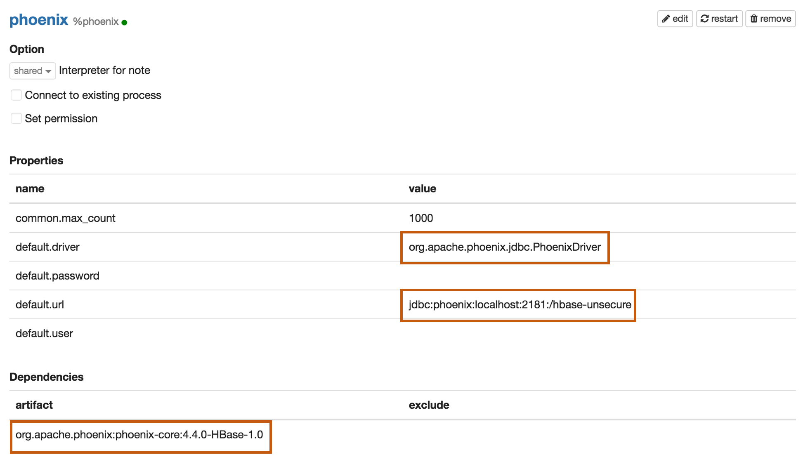
Properties
| Name | Value |
|---|---|
| default.driver | org.apache.phoenix.jdbc.PhoenixDriver |
| default.url | jdbc:phoenix:localhost:2181:/hbase-unsecure |
| default.user | phoenix_user |
| default.password | phoenix_password |
Dependencies
| Artifact | Excludes |
|---|---|
| org.apache.phoenix:phoenix-core:4.4.0-HBase-1.0 |
Maven Repository: org.apache.phoenix:phoenix-core
Thin client connection
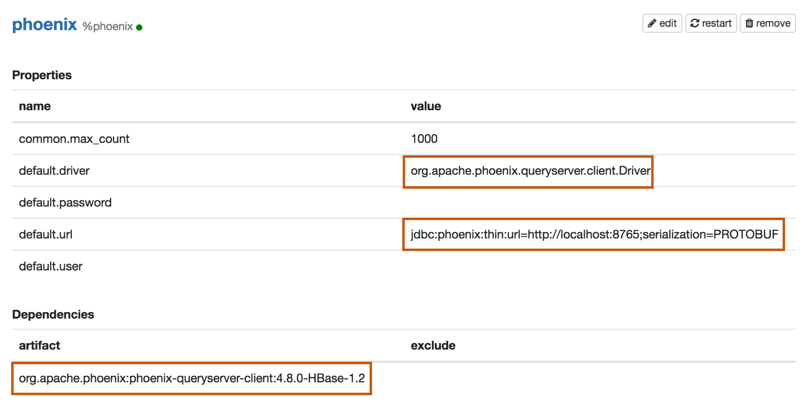
Properties
| Name | Value |
|---|---|
| default.driver | org.apache.phoenix.queryserver.client.Driver |
| default.url | jdbc:phoenix:thin:url=http://localhost:8765;serialization=PROTOBUF |
| default.user | phoenix_user |
| default.password | phoenix_password |
Dependencies
Before Adding one of the below dependencies, check the Phoenix version first.
| Artifact | Excludes | Description |
|---|---|---|
| org.apache.phoenix:phoenix-server-client:4.7.0-HBase-1.1 | For Phoenix 4.7 |
|
| org.apache.phoenix:phoenix-queryserver-client:4.8.0-HBase-1.2 | For Phoenix 4.8+ |
Maven Repository: org.apache.phoenix:phoenix-queryserver-client
Apache Tajo
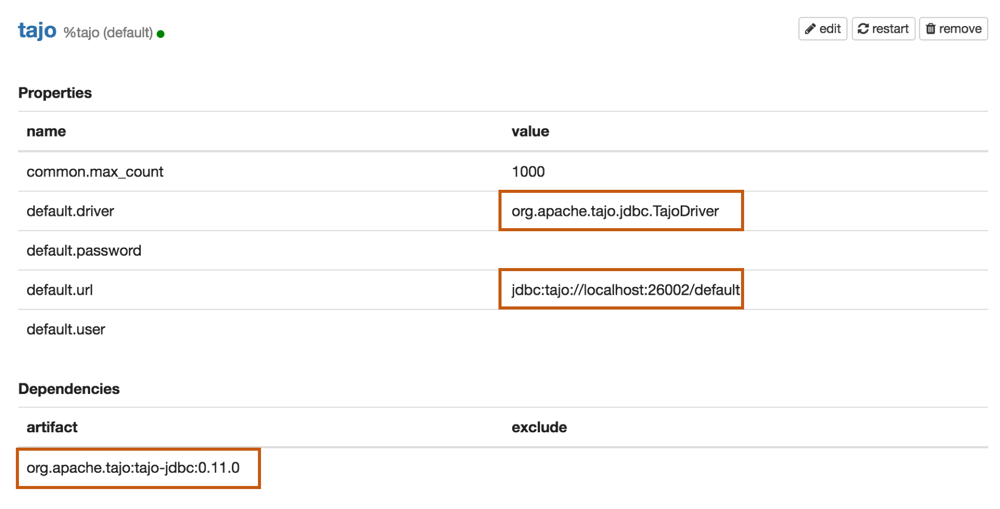
Properties
| Name | Value |
|---|---|
| default.driver | org.apache.tajo.jdbc.TajoDriver |
| default.url | jdbc:tajo://localhost:26002/default |
Dependencies
| Artifact | Excludes |
|---|---|
| org.apache.tajo:tajo-jdbc:0.11.0 |
Maven Repository: org.apache.tajo:tajo-jdbc
Bug reporting
If you find a bug using JDBC interpreter, please create a JIRA ticket.